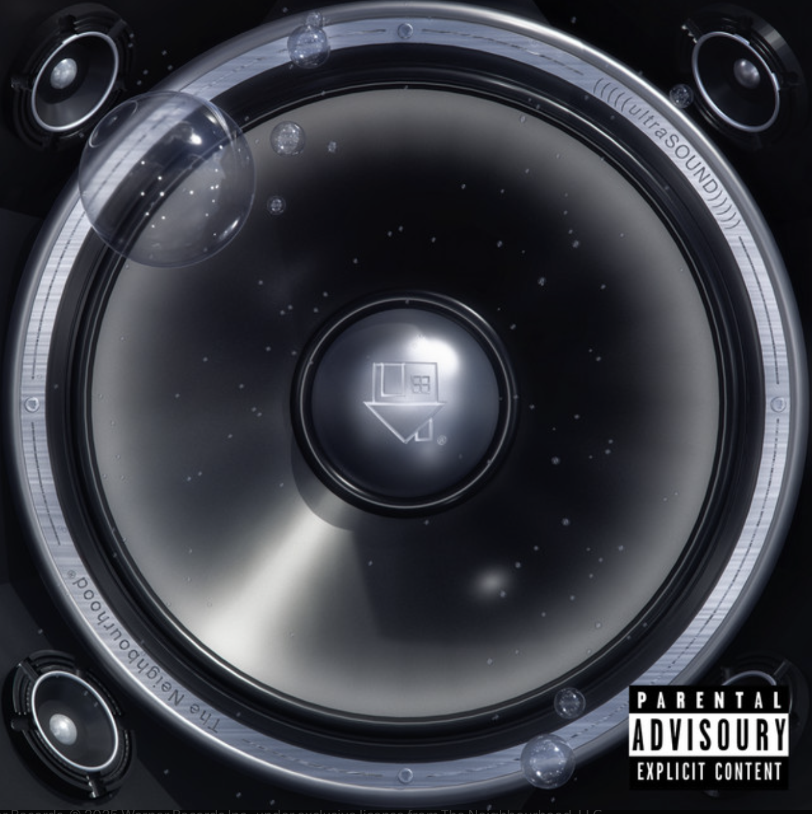

Music Video
Cage me up and take my information Change my name and tell me what I want Teach me how to take humiliation Oh-oh Chase me down and make a situation Stay the same and ask me what I've got Wish I listened to my intuition For once, oh-oh, for once 'Cause I know what it's like To feel alone And I know what it's like Losing a home And I know what it's like To steal a soul Oh, I feel like a ghost Car pulls over, rain is pouring Heartbeat scoring every moment Faster, slower, can't control it, oh She said, let's keep going 'til the morning I need more, hold me closer Hold me closer, hold me closer Hold me closer and closer and closer Hold me close Hold me close Hold me close Wake you up, middle of the night Saw you in my dream, I need you right now Made you late again, I'm sorry, baby Never mind your time 'Cause I know what it's like To feel alone And I know what it's like Losing a home And I know what it's like To steal a soul Oh, I feel like a ghost Hold me closer and closer and closer Hold me close Hold me close Hold me close Car pulled over, rain is pouring Heartbeat scoring every moment Faster, slower, can't control it Hold me closer and closer and closer